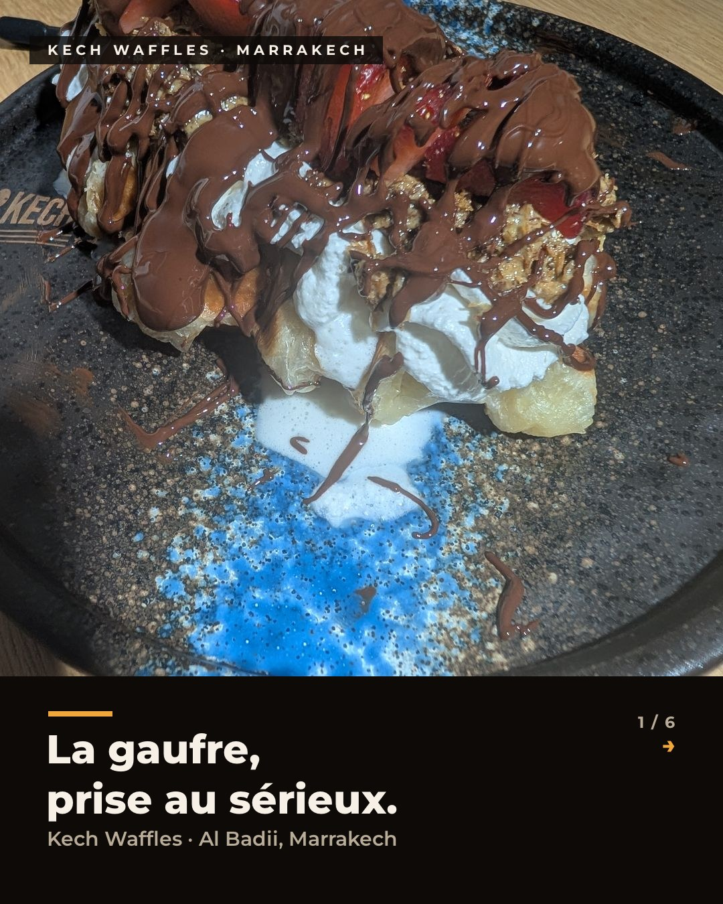
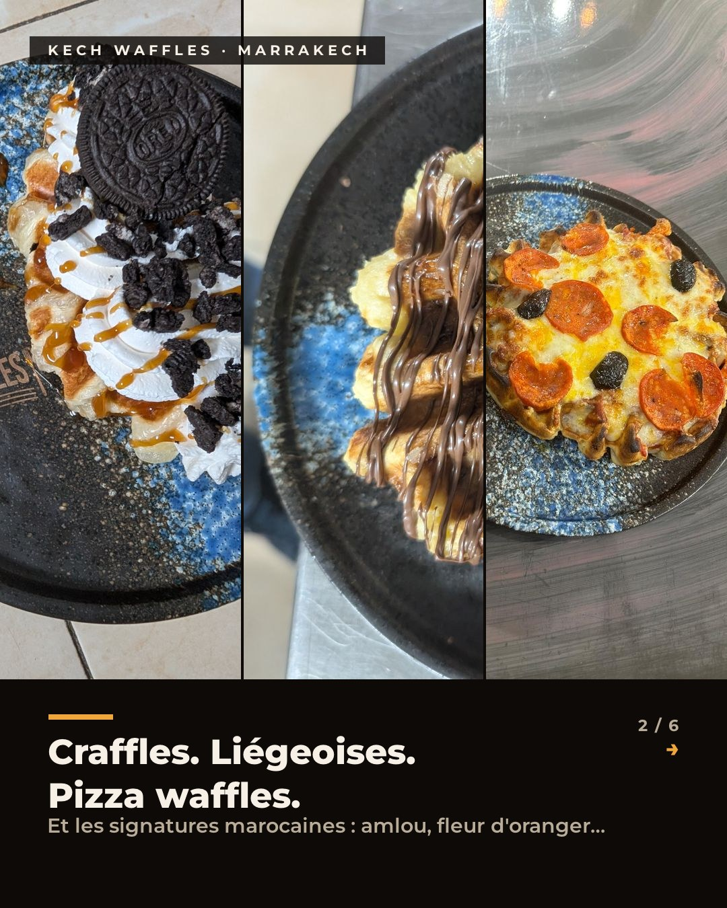
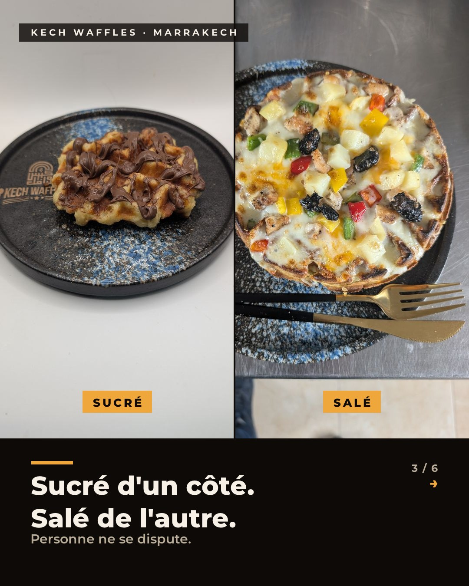
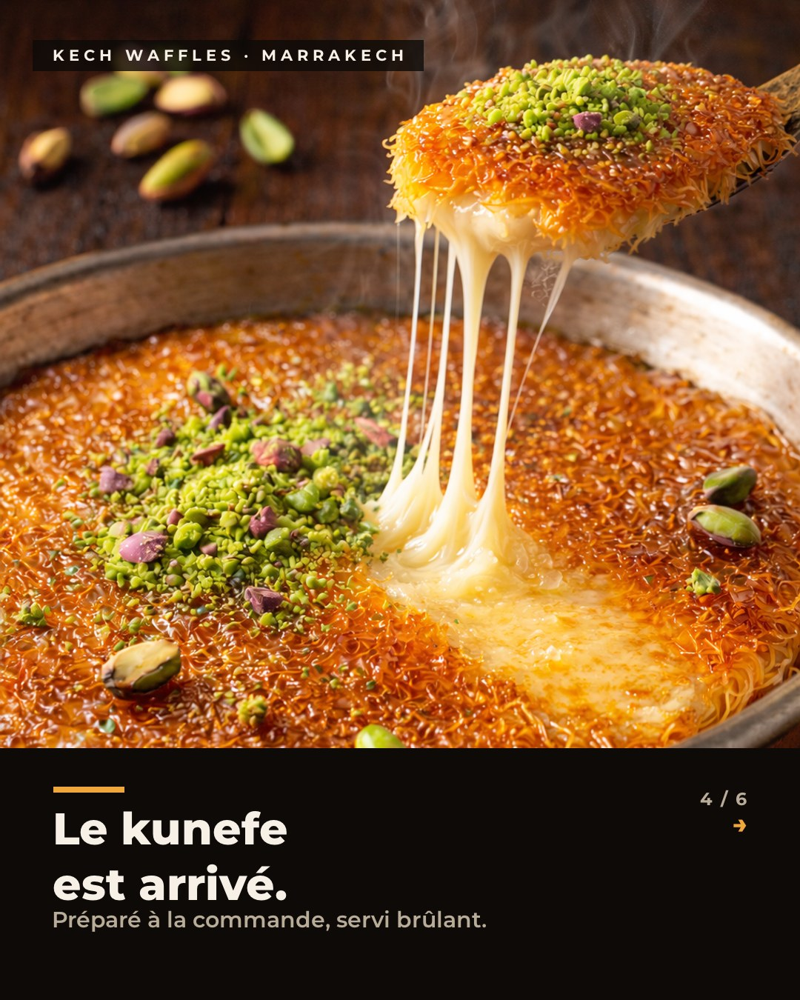
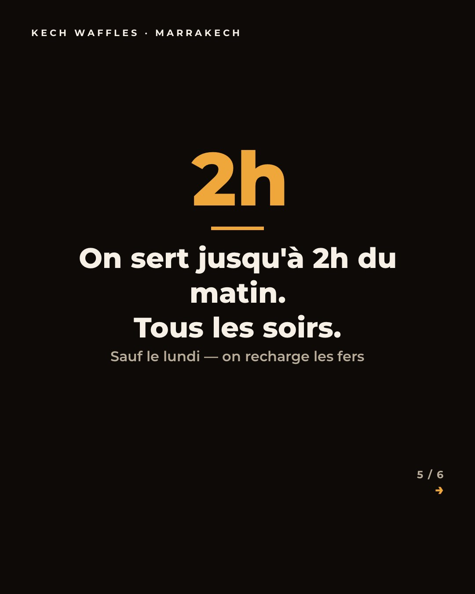
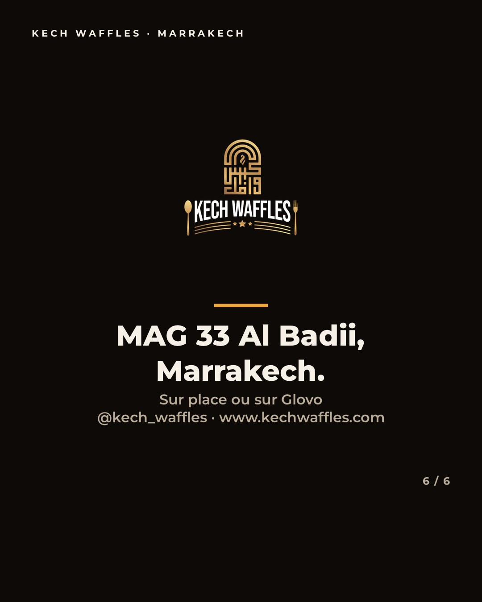
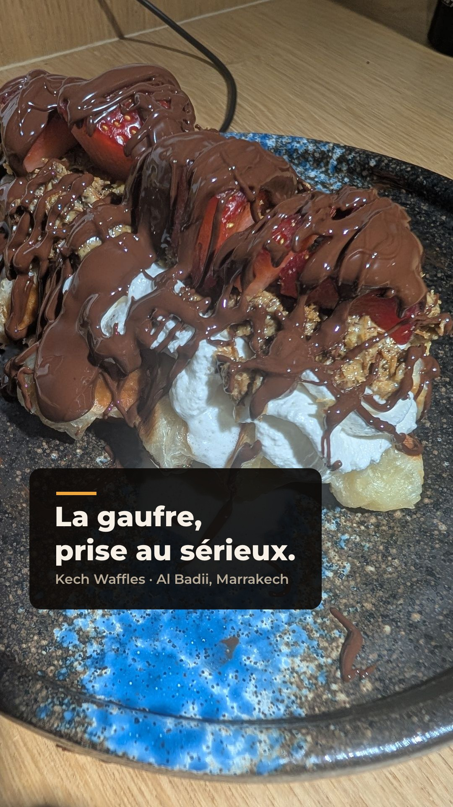
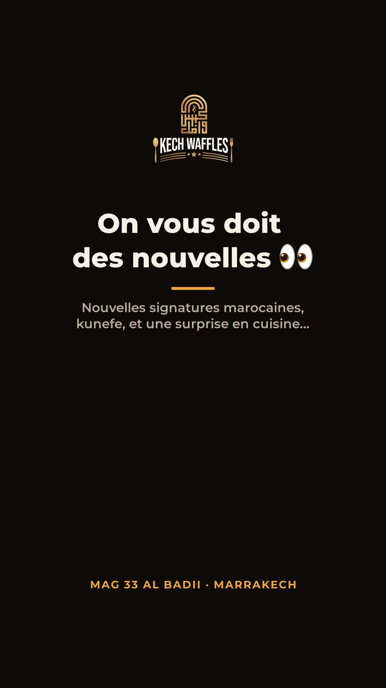
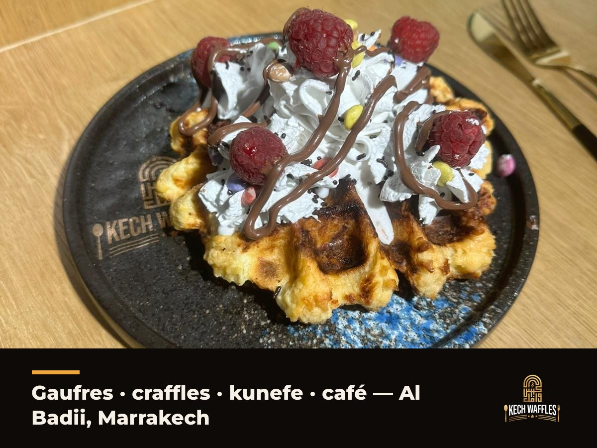

Kech Waffles — Kit de relance
Relancer les comptes avant d'enchaîner sur le pack ../daily-posts/ (14 jours).
Chaque fichier .md de ce dossier contient la copy prête à coller.
Instagram — carrousel & reel
Carrousel de relance 6 slides (FR + EN), reel 30 s, post feed simple, règles stories.
instagram.md
TikTok — 3 scripts vidéo
Cheese pull kunefe, « la gaufre en marocain », backstage — hooks darija inclus + 5 formats récurrents.
tiktok.md
Facebook — groupes locaux
Post de relance, stratégie groupes Marrakech, événement récurrent « jusqu'à 2h ».
facebook.md
Google Business — la fiche
Le canal n°1 d'un commerce physique : catégories, description, photos, Q&A, avis, posts.
google-business.md
Stories · Bio · DM
Bios optimisées par réseau, séquence stories J1 (7 stories), réponses DM & objections.
stories-bio.md
Visuels générés — carrousel FR (la version EN est dans images/instagram/carousel-en/)


















Semaine de relance
| J1 | Carrousel IG + séquence stories + post FB + fiche Google mise à jour |
|---|---|
| J2 | TikTok/Reel : le cheese pull kunefe (le plus partageable d'abord) |
| J3 | Post Google Business de relance + photos fraîches sur la fiche |
| J4 | TikTok backstage (humaniser avant de vendre) |
| J5+ | → pack quotidien ../daily-posts/posts.md, jour 1 |
Les faits — ne pas improviser
🕙 Horaires Lun fermé · mar–jeu 11h–2h · ven 18h30–2h · sam 11h–2h · dim 18h–2h — jusqu'à 2h tous les soirs
🌐 Site www.kechwaffles.com · IG @kech_waffles · TikTok/FB @kechwaffles
🛵 Glovo glovoapp.com/…/kech-waffles-mar · 💬 WhatsApp +212 7 09 38 84 31
💰 Signatures Tiramisu 45 dh · Dubai 55 dh · Souss-Massa / Marrakchia / Oasis 50 dh